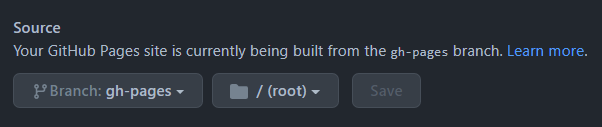

How to Use Unsupported Jekyll Plugins with GitHub Pages
A benefit of Jekyll, is it’s seamless support for automated deployment, for free, to GitHub Pages. However, the more time you invest in your Jekyll-powered website, you’re more likely to encounter unsupported plugins when trying to deploy to GitHub:
github-pages 223 | Error: Liquid syntax error on line 28: Unknown tagThe reason — all GitHub Page sites are generated using the --safe option to disable plugins (with the exception of some whitelisted plugins). Unfortunately, this means many plugins won’t work if you’re deploying via GitHub Pages.
The way to make use of unsupported plugins, is to build your website locally, instead of relying on GitHub’s automated build and deploy process for Jekyll.
Step 1: Update your Gemfile
Update your Gemfile and use the core jekyll gem, rather than the github-pages gem.
gem 'jekyll'Step 2: Create a GitHub action workflow
In your project, create a new workflow file ~/.github/workflows/deploy.yml. This workflow will create a new gh-pages branch for deployment. Find and change this if you prefer a different branch name:
name: build and deploy
on:
push:
branches: [ main ]
jobs:
build:
runs-on: ubuntu-latest
steps:
- uses: actions/checkout@v2
- name: 🔨 Build the site in the jekyll/builder docker container
run: |
docker run \
-v ${{ github.workspace }}:/srv/jekyll \
-v ${{ github.workspace }}/_site:/srv/jekyll/_site \
jekyll/builder:latest /bin/bash -c "chmod -R 777 /srv/jekyll && chmod -R 777 /usr/gem && jekyll build"
- name: 🧪 Push the site to the gh-pages branch
run: |
sudo chown $(whoami):$(whoami) ${{ github.workspace }}/_site
cd ${{ github.workspace }}/_site
git init -b gh-pages
git config user.name ${{ github.actor }}
git config user.email ${{ github.actor }}@users.noreply.github.com
git remote add origin https://x-access-token:${{ github.token }}@github.com/${{ github.repository }}.git
git add .
git commit -m "🧪 Deployed with commit ${{ github.sha }}"
git push -f -u origin gh-pagesUnderstanding the workflow
Let’s take a closer look at what’s happening in this workflow:
-
name— The name of our workflow. -
on— Defines when the workflow will be triggered. In this example, on push to themainbranch -
jobs— A set of steps to be executed when our workflow is triggered. You can learn more about jobs from the GitHub Docs. -
steps— These are the individual steps which make up our job.
Our job begins with a reusable action, actions/checkout@v2, which clones our project to the workflow’s virtual environment:
- uses: actions/checkout@v2Following that, we’re going to use the jekyll/builder docker image to build our project files:
- name: 🔨 Build the site in the jekyll/builder docker container
run: |
docker run \
-v ${{ github.workspace }}:/srv/jekyll \
-v ${{ github.workspace }}/_site:/srv/jekyll/_site \
jekyll/builder:latest /bin/bash -c "chmod -R 777 /srv/jekyll && chmod -R 777 /usr/gem && jekyll build"It is necessary to grant public read/write permissions to both the /srv/jekyll and /usr/gem directories, otherwise you’ll encounter build errors:
There was an error while trying to write to
/srv/jekyll/Gemfile.lock. It is likely that you need to grant write permissions for that path. Error: Process completed with exit code 23.
The last step of our job, is to deploy our Jekyll website to GitHub pages. We accomplish this by pushing our build changes to our deployment branch.
- name: 🧪 Push the site to the gh-pages branch
run: |
sudo chown $(whoami):$(whoami) ${{ github.workspace }}/_site
cd ${{ github.workspace }}/_site
git init -b gh-pages
git config user.name ${{ github.actor }}
git config user.email ${{ github.actor }}@users.noreply.github.com
git remote add origin https://x-access-token:${{ github.token }}@github.com/${{ github.repository }}.git
git add .
git commit -m "🧪 Deployed with commit ${{ github.sha }}"
git push -f -u origin gh-pagesFirst we make sure our workspace environment has ownership over our build directory (/_site), then enter it:
sudo chown $(whoami):$(whoami) ${{ github.workspace }}/_site
cd ${{ github.workspace }}/_siteNext we initialize a new repository, along with a new gh-pages branch we’ll use as our deployment branch:
git init -b gh-pages
git config user.name ${{ github.actor }}
git config user.email ${{ github.actor }}@users.noreply.github.com
git remote add origin https://x-access-token:${{ github.token }}@github.com/${{ github.repository }}.gitLastly, we commit our built website files to our gh-pages branch:
git add .
git commit -m "Deploy site built from commit ${{ github.sha }}"
git push -f -u origin gh-pagesStep 3: Commit the workflow
Commit and push your workflow file to the main branch of your repository. This also serves to trigger our workflow action.
Step 4: Update repository settings
Visit your repository on GitHub, navigate to Settings > Pages, then update your Source to your new deployment branch — gh-pages:
 Found at https://github.com/{username}/{repository}/settings/pages
After a short wait, your website will be available again, along with any features driven by those unsupported plugins.